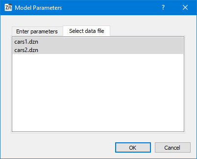
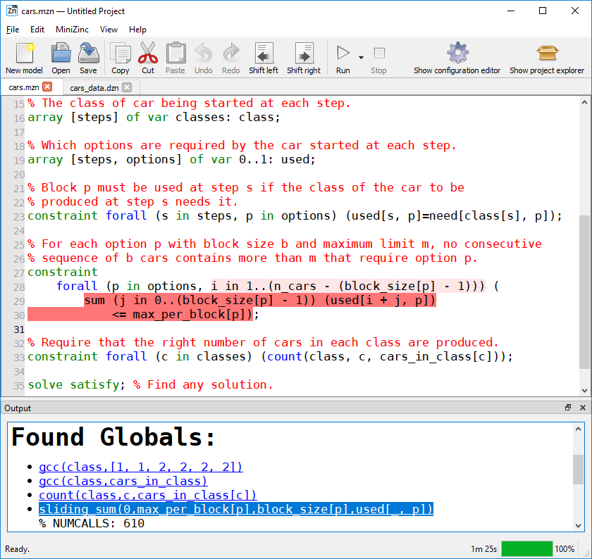

3.7. Globalizer
Globalizer [1] analyses a model and set of data to provide suggestions of global constraints that can replace or enhance a user’s model.
3.7.1. Basic Usage
To use Globalizer simply execute it on a model and set of data files:
minizinc --solver globalizer model.mzn data-1.dzn data-2.dzn
Note: Globalizer may also be executed on a non-parameterised model with no data files.
The following demonstrates the basic usage of Globalizer. Below, we see a simple model for the car sequencing problem [2], cars.mzn.
% cars.mzn
include "globals.mzn";
int: n_cars; int: n_options; int: n_classes;
set of int: steps = 1..n_cars;
set of int: options = 1..n_options;
set of int: classes = 1..n_classes;
array [options] of int: max_per_block;
array [options] of int: block_size;
array [classes] of int: cars_in_class;
array [classes, options] of 0..1: need;
% The class of car being started at each step.
array [steps] of var classes: class;
% Which options are required by the car started at each step.
array [steps, options] of var 0..1: used;
% Block p must be used at step s if the class of the car to be
% produced at step s needs it.
constraint forall (s in steps, p in options) (used[s, p]=need[class[s], p]);
% For each option p with block size b and maximum limit m, no consecutive
% sequence of b cars contains more than m that require option p.
constraint
forall (p in options, i in 1..(n_cars - (block_size[p] - 1))) (
sum (j in 0..(block_size[p] - 1)) (used[i + j, p])
<= max_per_block[p]);
% Require that the right number of cars in each class are produced.
constraint forall (c in classes) (count(class, c, cars_in_class[c]));
solve satisfy; % Find any solution.
And here we have a data file cars_data.dzn.
% cars_data.dzn
n_cars = 10;
n_options = 5;
n_classes = 6;
max_per_block = [1, 2, 1, 2, 1];
block_size = [2, 3, 3, 5, 5];
cars_in_class = [1, 1, 2, 2, 2, 2];
need = array2d(1..6, 1..5, [
1, 0, 1, 1, 0,
0, 0, 0, 1, 0,
0, 1, 0, 0, 1,
0, 1, 0, 1, 0,
1, 0, 1, 0, 0,
1, 1, 0, 0, 0
]);
Executing Globalizer on this model and data file we get the following output:
% minizinc --solver globalizer cars.mzn cars_data.dzn
cars.mzn|33|12|33|69 [ ] gcc(class,cars_in_class)
cars.mzn|33|35|33|68 [ ] count(class,c,cars_in_class[c])
cars.mzn|28|27|28|65;cars.mzn|29|9|30|32 [ ] sliding_sum(0,max_per_block[p],block_size[p],used[_, p])
Each line of output is comprised of three elements.
Expression locations (separated by semicolon ‘;’) that the constraint might be able to replace.
(Between square brackets ‘[’ ‘]’) the context under which the constraint might replace the expressions of 1.
The replacement constraint.
From the example above we see that a gcc constraint and a sliding_sum constraint can replace some constraints in the model. Taking the sliding_sum case, we see that it replaces the expression cars.mzn|28|27|28|65 which corresponds to i in 1..(n_cars - (block_size[p] - 1)) and cars.mzn|29|27|28|65 which corresponds to the <= expression including the sum. The original constraint can be replaced with:
constraint forall (p in options) (
sliding_sum(0, max_per_block[p], block_size[p], used[..,p]));
3.7.2. Caveats
MiniZinc syntax support. Globalizer was implemented with support for a subset of an early version of the MiniZinc 2.0 language. As a result there are some limitations. First, Globalizer does not support set variables or enum types. The array slicing syntax supported in MiniZinc was not decided upon when Globalizer was implemented so it uses an incompatible syntax. Globalizer uses _ instead of ... This can be seen above in the translation of used[_,p] to used[..,p].
New constraint. A special two argument version of the global_cardinality constraint called gcc has been added which is not in the standard library. It is defined as follows:
predicate gcc(array[int] of var int: x, array[int] of var int: counts) =
global_cardinality(x,
[ i | i in index_set(counts) ],
array1d(counts));
3.7.3. Supported Constraints
Globalizer currently supports detection of the following constraints:
alldifferent alldifferent_except_0 all_equal_int
bin_packing bin_packing_capa bin_packing_load
binaries_represent_int binaries_represent_int_3A binaries_represent_int_3B
binaries_represent_int_3C channel channelACB
count_geq cumulative_assert decreasing
gcc global_cardinality inverse
lex_lesseq_int_checking lex2_checking maximum_int_checking
minimum_int_checking member nvalue
strict_lex2_checking subcircuit_checking true
atleast atmost bin_packing_load_ub
circuit_checking count diffn
distribute element increasing
lex_less_int_checking sliding_sum sort_checking
unary value_precede_checking
3.7.4. Using Globalizer in the MiniZinc IDE
To use the Globalizer in the MiniZinc IDE, open a model, and several data files. Select Globalizer from the solver configuration dropdown menu. Click the solve button (play symbol). If you did not select any data file, a dialog should pop up that allows you to select data files. To select multiple data files hold the Ctrl or Cmd key while clicking on each data file.
Click run. While processing your model and data files the MiniZinc IDE will display a progress bar on the toolbar.
Any discovered global constraints will be listed in the output pane of the IDE. Clicking on one of these constraints will highlight in the model the expressions that might be replaceable or strengthened by the constraint.
3.7.5. How it works
A summary of the algorithm is presented here. For a more detailed exploration of the approach see the Globalizing Constraint Models paper [1].
Normalize. In this step the model is transformed to make analysis easier.
Conjunctions of constraints are broken into individual constraints. For example: C1 /\ C2; becomes C1; C2;
Conjunctions under forall constraints are broken into individual forall constraints. For example: forall(...) (C1 /\ C2); becomes forall(...) (C1); forall(...) (C2)
Generate submodels. In this step all subsets containing 1 or 2 constraints (this can be configured using --numConstraints argument) are enumerated.
Instantiate and unroll into groups. Each submodel is instantiated with the provided data files. These instantiated submodels are further used to produce more submodels by unrolling loops. For example, a constraint such as forall(i in 1..n) (c(i)); will be used to produce the constraints: c(1) and c(n) for each instantiation of n in the data files. All instantiated submodels are then grouped together.
Process groups. For each submodel in a group a set of 30 random solutions are found. (configurable using the --randomSolutions argument). A template model with all of these random solutions is created.
The different variables (including arrays and array accesses) and parameters used by a submodel are collected into a set of potential arguments along with the constant 0 and a special blank symbol representing an argument that can be inferred based on others used.
The list of constraints above is filtered based on the arguments available. For example, the alldifferent constraint will be removed from the list of candidates if the submodel does not reference any arrays of variables.
Finally the set of constraints are filtered by adding them to the template and solving it. If the template is satisfiable, the constraint accepts all of the random solutions.
30 sample solutions for each candidate constraint are generated. (configurable using the --sampleSolutions argument). The candidate is then ranked based on how many of these solutions are also solutions to the original submodel. If its score is less than some threshold the candidate is removed from the set of candidates for this group and will not be tested on later submodels.
Report. The remaining candidates are presented to the user.
3.7.6. Performance tips
Globalizing constraint models can be a time consuming task. If
Use small or relatively easy instances. Globalizer solves many subproblems while processing your model and data files. Using easier instances can speed up the process considerably.
Disable the initial pass. As discussed above, Globalizer performs two passes. The first pass tries to detect alternate viewpoints that can be added to your model. If you are confident that this will not be useful we recommend disabling this first pass using the --no-initial-pass argument.
Narrow search using filters. Globalizer attempts to match a large selection of global constraints to subproblems in your model. If you wish to check if only a few specific constraints are present you can focus Globalizer using the --constraintFilter or -f arguments followed by a comma separated list of strings. Only global constraints where one of the strings is a substring will be included in the search.
Disable implies check. The implication check can also be disabled to improve performance. This results in less accurate results but may still help a user to understand the structure of their model.
Free-search. To improve accuracy and to avoid false positives, subproblems solved by Globalizer are solved using a random heuristic and restarts. If the subproblems are particularly difficult to solve a random heuristic may be prohibitive and the solver may not be able to produce enough samples within the solving timelimit. In these circumstances a user can either increase the solver timeout using the -t argument followed by the number of milliseconds a solver should be given to find samples. Alternatively the --free-search argument can be used to force Globalizer to use the solver’s free search to find samples. This has the downside of reducing the diversity of samples but allows enough samples to be found to allow suggested globals to be found.
3.7.7. Limitations / Future work
Globalizer supports only a subset of the MiniZinc language and as such cannot be executed on all MiniZinc models.
There are some relatively cheap syntactic approaches that should be performed before Globalization that currently is not implemented. For example, there are several common formulations of an alldifferent constraint that can be detected syntactically. This would be much cheaper than using Globalizer.